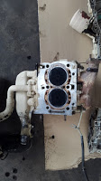
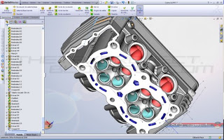
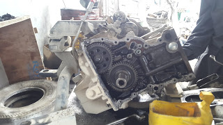
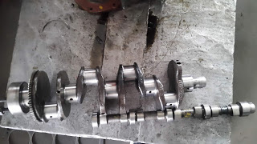
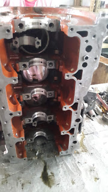

An internal combustion engine is a heat engine that uses fuel consumption from an oxidizer to move the piston assembly in an engine converting chemical energy into mechanical energy. The expansion of high temperature and high pressure gases in an engine pushes the components of the engine to produce mechanical work. An engine is considered to be the heart of a vehicle. Engine is what powers the whole vehicle to run in a desired manner.
The term internal combustion simply means the combustion of fuel is intermittent, i.e the mixture of fuel and air is burnt inside the combustion chamber. There are a wide range of application of n internal combustion engine and fuel powered vehicles are one of the major application.
Engines are further divided into:
- Reciprocating engine
General 2-stroke and 4-stroke engine falls under this category. Reciprocating engines are very common in automobile applications. 1,2,4,6 cylinder engines are perfect examples of engine types used in modern day cars and motorcycles.
2. Rotary engines
An internal combustion engine which uses eccentric rotary design to convert pressure into rotatory motion. Wankel engine is an example of a rotatory engine.
3. Continuous combustion engine
jet engines, rocket engines are the example of continuous combustion engines.
ENGINE DESIGN
Engine design are done as per the required needs in a certain automobile. We will only be reviewing about the reciprocating engine. Generally the design of the engine are classified according to the below given factors:
- Type of fuel : Petrol, Deisel
- Number of strokes: 2 stroke, 4 stroke
- Number of cylinders: 2-8 cylinders
- Engine volume: 1000 CC, 2500 CC etc
- Type of ignition : Spark ignition, Compression ignition
- Arrangement of cylinders: inline, V, W
- Bore to stroke ratio
- Engine cooling methods: Air cooled, Liquid cooled
Keeping all the parameters in mind a model of engine is designed using various software as per the pre-calculation done for the engine. Different engine parts are:
Engine head
Engine head refers to the top section of the engine. It consists of the intake and exhaust valves for the inlet of air-fuel mixture and outlet of the exhaust gas after the combustion respectively. The valves are usually automated by the cam shaft drive by the crank shaft of the engine. Some engine also use push rod and rocker arm for automating the valves in engine head. The head also consists of the connection from the fuel tank for fuel delivery. Injector and spark plug are also the part of the engine head. All the parts are designed separately and then assembled to form a engine head.
Engine Block
Engine block is the body of the engine which mounts the engine parts such as pistons, crankshaft, camshaft, oil pump, oil filter, oil cooler, water pump and oil pan. The piston is the component inside the combustion chamber which reciprocates during the intake, combustion, power and exhaust stroke. The reciprocation of the piston which is connected to the crankshaft via connecting rod causes the crank shaft to rotate providing the power to the driver shaft. Cam shaft is also linked to the crankshaft which works in opening and closing of the inlet and outlet valves in the cylinder head to supply fuel in the combustion chamber. Various different sensors such as cam position sensors, crank position sensors, temperature sensors are provided in the engine block that senses the internal parameters and sends a signal to the ECU( Electronic Control Unit) which actuates the components such as injector, pumps etc. During designing process all these components are separated designed with a very high caution and are then assembled to form a engine cylinder block.

After the completion of all the design the designed parts are processed under simulation software such as ANSYS for boundary meshing and forte analysis to determine and compare the result with experimental results. Then after design is further processed into manufacturing process. Carbon steel, magnesium, cast iron, aluminium alloys are the most commonly used materials for the manufacturing of engine components. These components are manufactured separately through the use of CNC machines and then after assembled that represents the whole engine of an automobile.
